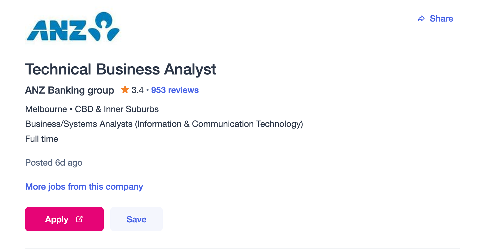
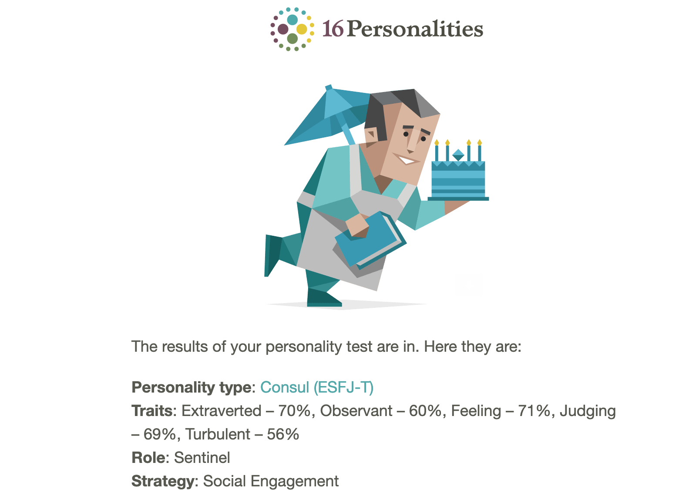
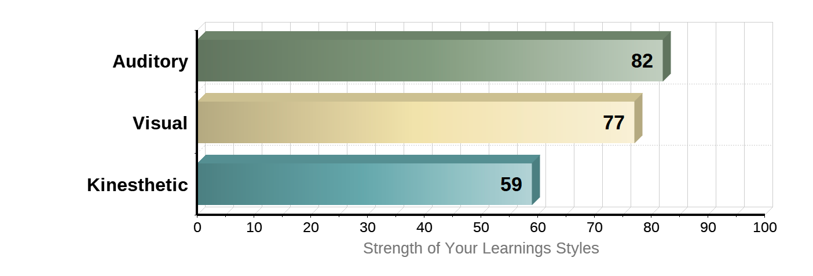
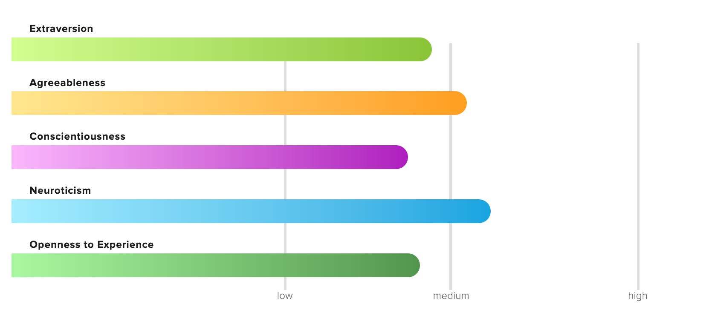

Interest in IT
Over the years IT has gained a prominent place. Information technology is dominating most of the sectors. Disruption in technology has changed the way businesses operates. Most of my friends selected IT and seeing them working with codes got me interested too. In the 21st century IT plays a major role, and I realised that IT would be play a major role across all industries. I was looking for a qualification which involves business and IT, Then I came across Business Information systems. Another important reason which cultivated my interest in IT was Tech Start-ups. I have been reading articles from successful figures and their journey which influenced me a lot. One of my close friends owns a tech company and I have seen how he started it from scratch, and this sparked my interest in IT. I had a tough time selecting my university, after a thorough research and comparison I selected RMIT based on the reputation and the Course they offered. The course I selected is a combination of business and IT, that’s exactly what I was looking for. Initially I did not have much knowledge in IT, But I had the interest to learn IT. The course structure at RMIT was designed in a way, where even a student with a business background can learn the important aspects of it and develop the skills. At present I am much confident and have sound knowledge in IT. Before commencing my studies, I expected that this course will develop My skills in IT and learn the basics of programming. As I expected I managed to gain some knowledge on programming and data management using tools such as SQL.
Ideal Job
The link below is for a job for a Business Analyst and ANZ
The position of Business Analyst will suit me since I am Information system undergraduate. The role of an ICT Business Analyst focusses mainly on developing and implementing technology systems to optimize business process. They work users to formulate system requirements. In other words, A business analyst bridges the gap between IT and Business aspect in an organization. They identify the business needs by communicating with the users and then make the necessary technical implementations. I am Interested in this role because a business analyst works between the business department and IT department. Business analyst plays a crucial role in an organization.
This role requires a degree in information technology/system. Degree is the basic qualification required and any other qualification would be an added advantage. Previous experience as an Analyst is mandatory. A sound knowledge on systems and the ability to translate user requirements. Should be able to work with API’s. Strong communication and presentation skill is vital.
I am currently in my final semester and expecting graduate by the end of this semester. I have a sound technical knowledge and have the ability to translate user requirements. I am looking for an internship to gain some valuable experience. I have skills and ability to use various IT tools. I am trying to secure an internship or a graduate role as a business analyst and gain some experience. I will also try to get few other professional qualifications related to my field. After gaining some valuable experience and developing important skills, I will try for the above position.
Personal Profile
Online Myer Briggs test
Learning Style test
Big 5 personality test
The results of the above tests clearly indicate the type of the person and the personality. The online Myer Briggs test shows that I got traits of an extrovert and I like interacting with people. I am more observant and turbulent. The learning style test indicates that I am good at auditory and visual learning. The 5 traits in the big 5 personality test are at a medium level.
The above results would influence my behaviour in the team in a numerous way. Since I am an extrovert, I may find it easy to cope up work with a team to produce better results. I am also open to experience and that comes in handy when working with a team. Since I am a good visual and auditory learner, I tend to listen and follow instruction properly.
When forming a team, the above traits should be taken into consideration. A team may consist of people with different traits. All the attributes and traits should be considered when forming a team. If the team members don’t get along well, the results will not be productive. A team should consider members different abilities, so that each task can be completed efficiently
Project Idea
The Automobile industry has been in the expansionary phase for a very long time. It’s a highly competitive market and a lot of new manufacturers are stepping into the market. In Developed countries each household tend to have at least one vehicle. The customers are left with too many options. An application should be developed for all the automobile needs of the customer. This application should contain all the features starting off with Comparing the available vehicle options to repairing the vehicles. The customers should be able to compare vehicle options based on their preferences and the application should display the available options and the dealers. This application should contain all the other features related to automobiles such as repairs, services etc. This application will be useful as the users of this application saves a lot of time and money since they don’t have to go through the hassle of manually researching. In Australia roughly around 85 percent of households owns a vehicle. There’s high demand for vehicles and vehicles related services in Australia. This application suits almost all the developed countries because vehicles have become a crucial component of their lives. The busy lifestyle paves way for the growth of these kind of Application which eases people’s lives. This Application. This application will help the users solve all their vehicle related problems.
The Application should start off with the user signing up and entering the relevant details. The vehicle details should be added as well if the user owns one. The user is displayed with all the available features after logging in. This application would consist of features such as vehicle comparison, vehicle maintenance which includes services, vehicle detailing, panel beating, My vehicle etc. The vehicle comparison features come in handy for people looking to buy a vehicle. They can filter and add their vehicle preferences and list will be generated based on their preferences. Finally, they have the option to compare the vehicles and select the best. The vehicle maintenance option becomes useful for existing vehicle owners. Once the user logins and selects the vehicle maintenance option, the user will be displayed with following options, Vehicle service, repairs, and vehicle inspections. The user’s vehicle will be already saved in the database, so the user will not have to enter the vehicle details again. If the user wants to maintenance for another vehicle, he can enter the vehicle details. When the vehicle service option is selected, the top service centres recommended for the given vehicle model will be displayed and the estimated quote will be given. The repair options generally show the top repair centre within the given radius. The user will be able to specify the repair and get quotations from the several repair centres. The panel beating options gives you the leading panel beaters within a given a radius. The user will be able to upload images of the damage and get a quotation for panel beating and the paint job from the several panel beaters. The vehicle detailing feature is like the other features where the user gets quotations based on the requirement. An Important feature of this platform is the My vehicle function. This function allows you to add a vehicle and store important vehicle documents like the registration, Insurance, service records, receipts, and other important documents. This function will track and store all the necessary documents and reminds you on important dates like registration, insurance etc. My vehicle function will be a crucial function. This Application will be a one stop platform the vehicle users. This platform will be beneficial for the customers as well as the service providers. This platform enables the registered service providers get more customers. All parties involved here gets benefitted due to this platform. This Platform is like a diary for vehicle, once the platform has been launched the vehicle owners can get all their vehicle related issues solved at their fingertips. This platform will be able to track your location and will be able to connect the user with a roadside assistance provider in case of a breakdown. Even the insurance provider can be notified easily when necessary
It will take some time and effort to build and develop an application like this. There are several programming languages, and a suitable language should be chosen. This Application should be developed for both Android and IOS. Java can be used as the language for the Android application. There are cross platform languages, I prefer to use separate languages for different platform. Objective C and swift programming language will be used for IOS application. I don’t have much knowledge in Objective C and swift programming language. I will have to learn the language, or I might use a tool like MIT App Inventor for this purpose The skills necessary for developing the application can be obtained by online courses and attending workshops. I have been taught the basics of Java during my course and I hope to capitalize on that. Other programming language like objective C and swift programming language can be learnt online. There are plenty of resources on the internet. A proper guide on how to use the MIT App inventor can be found on the internet and I can also get help from my peers.
As soon as launching the application the service providers should be integrated. The Application provider should have a discussion with the leading service providers and integrate them within the platform. Initially getting the service provider to agree would be a difficult task. Once that drawback has been eliminated the users will start signing up. Once all the barriers are sorted more and more customers will start using the application. This platform has the potential to be successful as this will solve most of the problems faced by vehicle users. This will have positive impact on both the service providers and the customers. This development will solve a lot of problems and saves time.